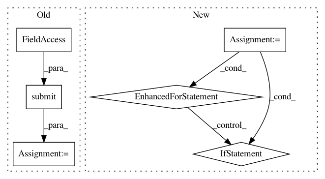

3810857dbc914921127a3f7ca5e3fd9a4f48a147,qiskit/aqua/utils/run_circuits.py,,run_on_backend,#Any#Any#Any#Any#Any#,341
Before Change
temp_noise_config = noise_config["noise_model"] if noise_config != {} else None
job = AerJob(backend, job_id,
backend._run_job, qobj, temp_backend_options, temp_noise_config, False)
job._future = job._executor.submit(job._fn, job._job_id, job._qobj, *job._args)
elif is_basicaer_provider(backend):
backend._set_options(qobj_config=qobj.config, **backend_options)
job = BasicAerJob(backend, job_id, backend._run_job, qobj)
job._future = job._executor.submit(job._fn, job._job_id, job._qobj)
After Change
if temp_backend_options is not None or temp_noise_config is not None:
config = qobj.config.to_dict()
if temp_backend_options is not None:
for key, val in temp_backend_options.items():
config[key] = val if not hasattr(val, "to_dict") else val.to_dict()
if temp_noise_config is not None:
config["noise_model"] = temp_noise_config
qobj.config = QasmQobjConfig.from_dict(config)
In pattern: SUPERPATTERN
Frequency: 3
Non-data size: 6
Instances
Project Name: Qiskit/qiskit-aqua
Commit Name: 3810857dbc914921127a3f7ca5e3fd9a4f48a147
Time: 2020-10-13
Author: Manoel.Marques@ibm.com
File Name: qiskit/aqua/utils/run_circuits.py
Class Name:
Method Name: run_on_backend
Project Name: okfn-brasil/serenata-de-amor
Commit Name: cef99445ab551931fed507518b85034b97c946ee
Time: 2016-11-09
Author: cuducos@gmail.com
File Name: src/search_suspect_places.py
Class Name:
Method Name: search_suspicious_around_companies
Project Name: okfn-brasil/serenata-de-amor
Commit Name: e1d39a4c9158c9a9db1218cb5be9946152e2ca1b
Time: 2017-04-14
Author: marcus.rehm@gmail.com
File Name: src/fetch_cnpj_info.py
Class Name:
Method Name: